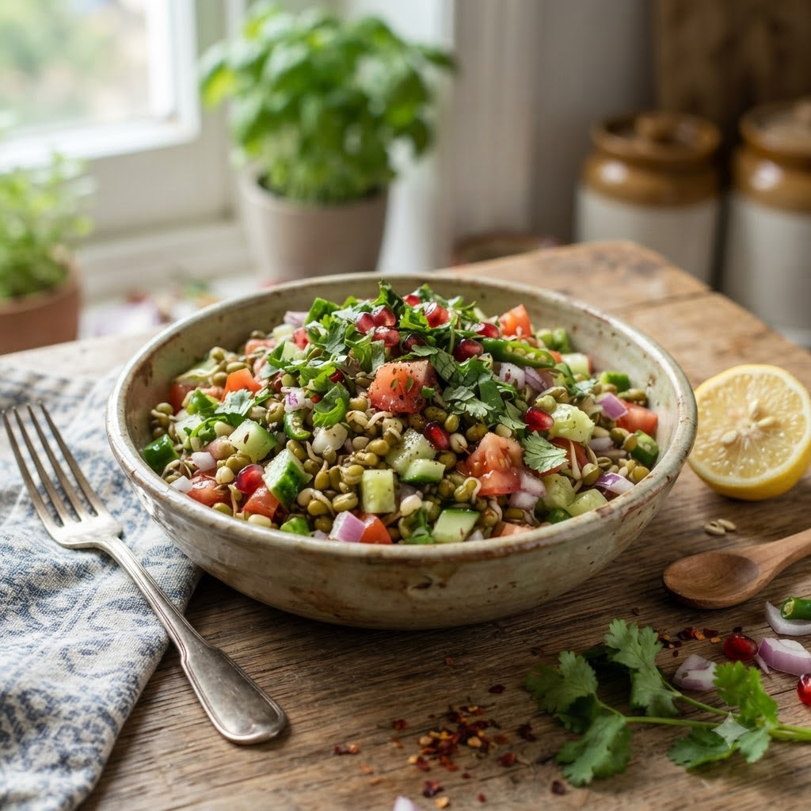

Sprouted Moong Salad

Sprouted Moong Salad
No-Cook (Chef Magic Steam optional) — 10 min — Serves 2
Gluten-Free • Vegan • High-Fibre • Gut-Friendly • No-Cook
Prep ahead: Sprout moong beans 2 days ahead: soak overnight, then keep in a damp cloth until they sprout.
Ingredients
- 2 cups sprouted moong beans
- 1 small onion, finely chopped
- 1 tomato, chopped
- 1/2 cucumber, chopped
- 1 tbsp lemon juice
- 1/2 tsp chaat masala
- Salt to taste
- Chopped coriander (dhania)
Method
1If you prefer them slightly cooked, steam the sprouts in Chef Magic using the steamer tray for 4 minutes; otherwise use raw.
2Toss sprouts with onion, tomato, cucumber, lemon juice, chaat masala and salt.
3Garnish with coriander and serve fresh.